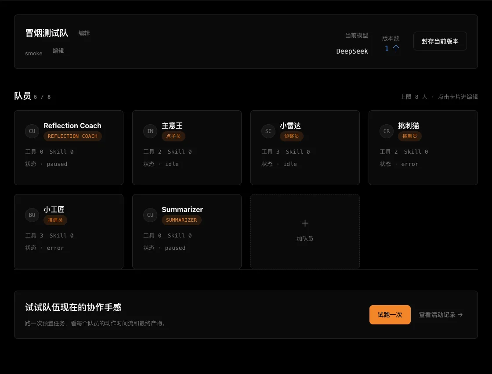

定义队伍
选择角色、起名、设置职责与协作关系。
角色 · 职责 · 工具TeenX · 少年 AI 队伍养成
不写代码，也能定义角色、安排协作、发起试跑，并看见每个队员怎样把任务做出来。
01从使用者到队长
少年决定队伍里有哪些角色、每个队员负责什么，以及它们如何协作。每次修改都可以马上试跑、查看过程，再继续调整。

02队伍如何成长
让每一次调整都有反馈，让“我的队伍在变强”真正看得见。
选择角色、起名、设置职责与协作关系。
角色 · 职责 · 工具给队伍一个任务，查看每位队员的贡献。
任务 · 活动 · 产物根据结果调整队伍，并封存成长版本。
反馈 · 版本 · 成长Team Studio
从组队、试跑到 Arena 评审的完整演示队伍
Core team
查清事实、寻找约束，为队伍准备可靠信息。
提出不同方向，把模糊目标变成可选方案。
把方案制作成可以查看和验证的实际产物。
检查遗漏与风险，确保作品达到提交标准。
System support
系统辅助输入目标后，四个角色会依次研究、构思、搭建和检查。
Team run
队长描述目标，队员按角色分工协作。
Live run
Run completed
侦察员确认任务边界整理核心功能和移动端约束
点子员提出交互方案用快速输入、筛选和完成状态降低操作成本
搭建员生成可操作产物完成页面结构、状态逻辑和本地保存
挑刺员完成提交检查键盘操作、空状态和小屏布局均通过
Arena scorecard
基于当前队伍版本与产物的多维评审结果。
任务范围清楚，核心操作完整，角色分工记录可以追溯。
为大量待办增加搜索，并允许队长自定义颜色主题。
保留当前版本作为基线，再制作一个增强版本参与挑战。
Evidence
交互验证 新增、完成、删除和筛选均可操作
适配验证 页面覆盖桌面与移动视口
协作验证 四个角色均提供了可见贡献
TeenX community
分享作品、记录制作过程、互相解决问题。
我们把任务保存到了浏览器本地，即使刷新页面也不会丢失。挑刺员还补上了键盘操作检查。
我们先让侦察员写约束，再让点子员只输出三个候选方向，搭建员就更容易做决定。
把点击区域保持在 44px 以上，并在窄屏幕上让主要按钮占满可用宽度。
Challenge ranking
不同挑战的队伍成绩与完成速度。
| 排名 | 队伍 | 完成时间 | 得分 |
|---|
Captain profile
Todo Makers 队长 · 正在把点子变成作品
Privacy
分别控制队伍、作品和社区动态的可见性。
所有演示数据都保存在当前浏览器，不需要登录。